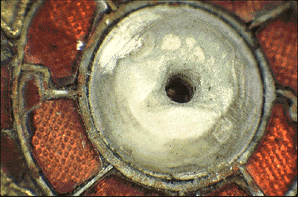

X-ray diffraction analysis is particularly useful in the study of museum objects because it is almost non-destructive. It requires a very small sample, much less than the size of a pin-head, to use the X-ray camera.
When X-rays are fired at a crystalline sample placed in the X-ray camera, a proportion are diffracted by the regular crystal structure. These diffracted X-rays produce a pattern of lighter and darker lines on a film. The pattern on the film depends on what is in the sample and by reference to standard data, this pattern can be used as a kind of 'fingerprint' to identify a wide variety of materials. Such materials include corrosion products on metals, pigments used on wall paintings, and inlaid decoration in jewellery.
Unlike techniques such as X-ray fluorescence (XRF), atomic absorption spectrometry (AAS), inductively-coupled plasma/mass spectrometry (ICP/MS) and other methods of chemical analysis that provide information on elemental composition, XRD allows a particular mineral to be identified.
 For example, limestone and shell were both used as white inlays on Anglo Saxon brooches (left). The problem is that both limestone (the mineral calcite) and shell (the mineral aragonite) consist chemically of calcium carbonate, so that the chemical analysis alone cannot distinguish between them. Using XRD it was a simple matter to identify the white inlay on the brooch as aragonite, showing that shell had been used.